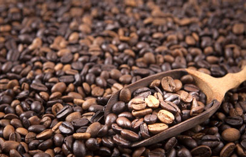
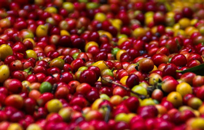

- 커피의 유래
- 커피의 종류
- 좋은 커피를 만드는 방법
- 커피 퀴즈
- 나의 최애 커피는?
커피의 종류
커피의 품종은 크게 3가지로 구별되는데 아라비카(Arabica), 로부스타(Robusta) 및 리베리카(Liberica)입니다.
아라비카는 부드럽고 향기가 있으며, 로브스타종에 비해 단맛, 신맛, 감칠맛, 향이 뛰어나 가격이 더 비싸고, 카페인 함유량이 로부스타보다 적습니다.
아라비카종은 해발 900~2000m 이상의 고지대에서 생산되며, 기계를 이용한 대량 재배와 수확이 불가능하기 때문에 사람손으로 일일이 심고 가꾸고 거두어야 합니다.
원두커피는 높은 지대에서 재배할수록 질이 좋은 것으로 인정되는데 그 이유는 지대가 높을 수록 기후가 서늘하고 열매가 서서히 익어 밀도가 단단해지기 때문입니다.
주요 생산국은 브라질을 비롯해 중남미, 콜롬비아, 멕시코, 과테말라, 이디오피아, 탄자니아, 케냐, 하와이, 코스타리카 등이며, 전세계 산출량의 약70-80%를 점유합니다.
브라질 산토스

브라질 산토스는 세계 커피생산량의 30%를 차지하며, 산토스 지방의 3,4년 정도 된 어린 커피나무에서 수확한 커피로, NO.2등급이 최고 등급입니다. 부드러운 맛과 신맛이 균일하게 조화를 이루고, 부드러운 풍미와 적당히 쓴맛이 어우러진 중성적인 커피로 향이 깊고 깔끔한 마일드 커피입니다.
케나 AA

케냐 AA는 해발 2,000미터가 넘는 고지대에서 생산되는 커피로, 'AA'는 원두의 크기를 나타내며, 가장 큰 원두이면서 최고급을 의미하는 등급니다. 향이 강하고 묵직한 바디감, 와인향과 과일같은 상큼한 신맛이 특징인 프리미엄 커피로 독특한 쌉쌀한 맛이 일품입니다.
코스타리카 따라주

중남미의 유럽이라 불리는 코스타리카는 1800년대부터 커피를 재배하여 세계 9위의 커피대국입니다. 아라비카종만 경작하며, 따라주는 가장 최고급 등급을 받은 커피를 말합니다. 은은하게 퍼지는 단맛과 신맛에 댝간의 쌉싸름한 맛이 조화롭고, 몰트의 구수함과 묵직한 바디감이 좋은 커피입니다.